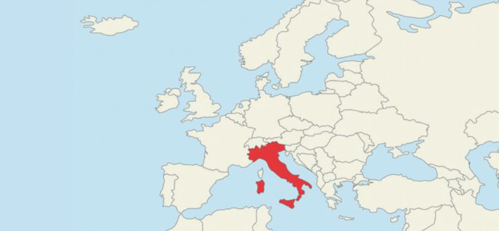

Romanzo e cultura europea contemporanea
Qui puoi esplorare due linee del tempo, una verticale e una orizzontale, organizzate anno per anno dal 1821 al 1842. Le timeline mettono in relazione alcuni momenti fondamentali della vita personale e dell’attività letteraria di Manzoni con eventi storici avvenuti nello stesso periodo in Italia e in Europa. In questo modo puoi capire meglio il contesto storico e culturale in cui il romanzo è nato e riconoscere le esperienze e gli avvenimenti che hanno influenzato l’autore durante la scrittura.
Le informazioni sulle fonti e sugli strumenti utilizzati per costruire le due linee del tempo sono disponibili nella pagina del progetto.